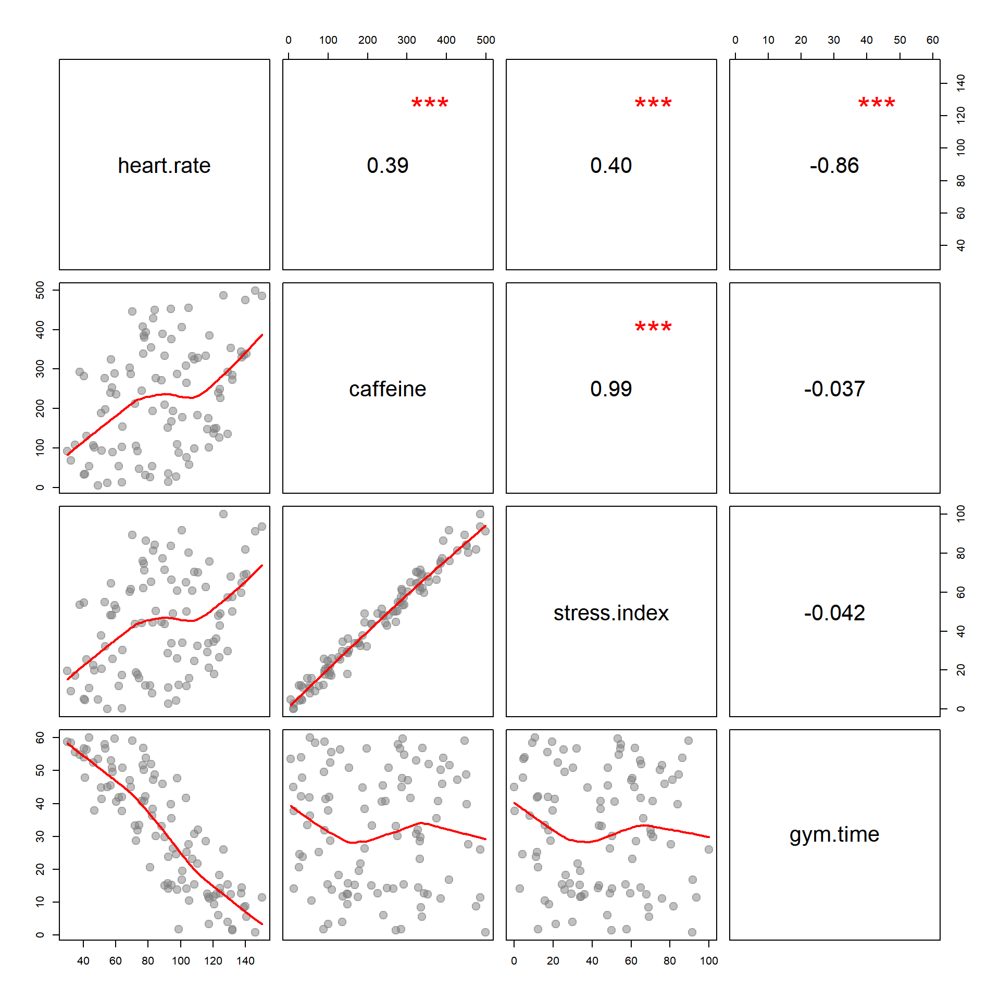

The goal of the assignment is to build intuition about what “control” variables are doing in a regression. In this model Class Size is the policy variable of interest. Teacher Quality and Socio-Economic Status are the controls.
You will examine the unconditioned relationship between Class Size and Test Scores, then add control variables to remove the variance associated with the controls to see how our estimate of policy impact might change if we account for other factors.
You will submit your solutions as an RMD document (specifically the HTML file created from the document). You can create a new RMarkdown file, or download the LAB-03 RMD template:
URL <- "https://raw.githubusercontent.com/DS4PS/cpp-523-fall-2019/master/labs/class-size-seed-1234.csv"
dat <- read.csv( URL )| test | csize | tqual | ses |
|---|---|---|---|
| 504 | 38 | 3.793 | 0.7947 |
| 651.3 | 23 | 5.277 | 2.301 |
| 623.6 | 42 | 6.084 | 0.4609 |
| 539 | 21 | 2.654 | 2.635 |
| 673.1 | 20 | 5.429 | 2.703 |
| 584.4 | 46 | 5.506 | 0.09412 |
Warmup: Draw a Ballantine Venn Diagram of Class Size, SES, Teacher Quality and Test Score. You do not have to submit your drawing, but it will be useful for answering questions below.
Create a scatterplot between Class Size (x-axis) and Test Score (y-axis). This will serve as a visual representation of our baseline model of the relationship between Class Size and Test Score.
plot( dat$csize, dat$test,
xlab="Class Size", ylab="Test Scores",
main="Relationship Between Class Size and Test Scores" )
abline( lm(test~csize,data=dat), col="firebrick", lwd=2 )
# CHANGE THE PLOT STYLE:
#
# pch=19 # change point style
# cex=1.5 # change point size
# col="firebrick" # change color
# bty="n" # remove bounding boxRegress Test Score on Teacher Quality while saving the residuals. Now create a scatterplot of Class Size and the residuals of Test Score. What happened to the strength of the relationship? Why?
\(test = b_0 + b_1 \cdot tqual + e1\)
Regress Test Score on SES and save the residuals. Create a scatterplot of Class Size and the residuals of Test Score. What happened to the strength of the relationship? Why?
\(test = b_0 + b_1 \cdot ses + e2\)
These graphs demonstrate the effects of adding the control variables Teacher Quality and SES to the baseline model of the relationship between Class Size and Test Score. Conceptually, the control variable will improve a model to remove variance to make the estimate either more precise (smaller standard errors) or less bias (adjust the slope of the policy variable).
Q 4-1:
Which control variable do you think is removing UNEXPLAINED portions of the outcome Test Scores? By removing the unexplained portions it will reduce the residuals in the full model.
Q 4-2:
Which control variable is removing the EXPLAINED portion of the variance of test scores (the covariance of class size and test scores)? By removing the explained portion it will weaken the relationship between class size and test scores.
Use the following regression table and graphs to answer the question.
Based upon the correlation structure reported below, which control variable do you expect would change the slope of caffeine if removed from the model?
Explain your reasoning.
Which would result in a larger standard error associated with caffeine if removed from the model?
Explain your reasoning.
| Dependent variable: | |
| heart.rate | |
| caffeine | 0.037 |
| (0.047) | |
| stress.index | 0.228 |
| (0.246) | |
| gym.time | -1.440*** |
| (0.062) | |
| Constant | 116.022*** |
| (2.982) | |
| Observations | 100 |
| R2 | 0.873 |
| Residual Std. Error | 11.016 (df = 96) |
| Note: | p<0.1; p<0.05; p<0.01 |

After you have completed your lab, knit your RMD file. Login to Canvas at http://canvas.asu.edu and navigate to the assignments tab in the course repository. Upload your RMD and your HTML files to the appropriate lab submission link.
Remember to: